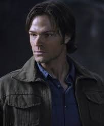

The Reluctant Hero
Sam Winchester is the troubled younger brother of Dean, who although he resisted the life initially inevitably became a hunter as well. He is also a member of the Men of Letters and devoted his life to saving the world.